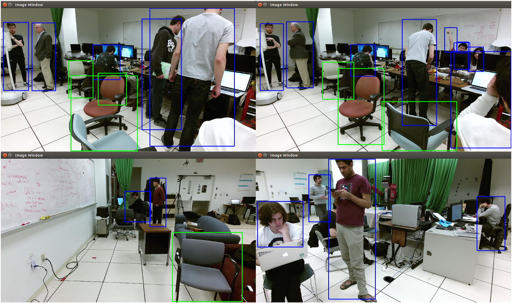
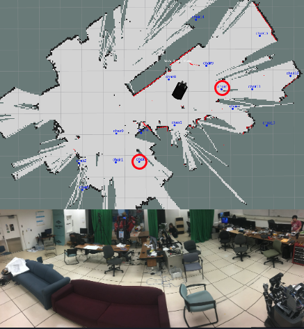

Introduction
In this project, we use MOVO robot to perform object detection and navigation. The goal for the robot is to identify the chairs and people in the environment and searching for empty chair location in the environment. Once the robot found the empty chair location, it registers it to the map. After it identifies all the empty chairs in the environment, users can ask the robot to direct to the closet empty chair.
Chair detection and localization
We use FasterRCNN with ResNet101 backbone trained on the VOC dataset, which has 20 classes including 'person' and 'chair'. We found directly running inference on pretrained model can already generate descent result in our testing environment. Therefore, no fine-tuning is performed.

We fetch the RGB values of the image that MOVO sees through the color channel and also fetch the depth image using the Kinect's sensor and converted to XYZ coordinates with respect to the robot. Based on the bounding box from the output of the fastRCNN, we use the centroid of the bounding box as the estimation for the chair location.
Here is a video demo of object detection and object registration on map. We use joy-stick to control the robot navigation.
Here is the result for all the chairs that robot detect and found in the environment. We see total of 13 out of 15 detection is correct and there are 2 false positives.

After detecting all the empty chairs, Movo can guide people to an empty chair by navigate autonomously in the environment.